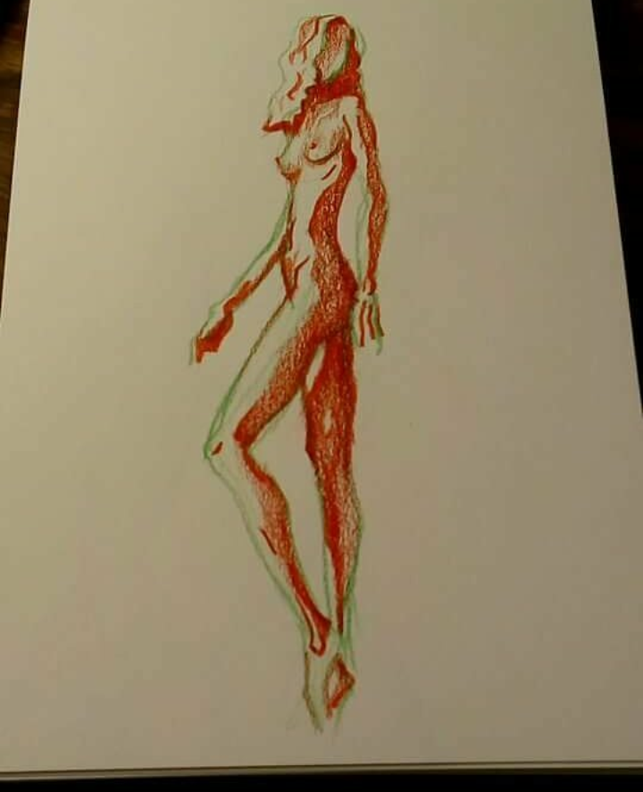
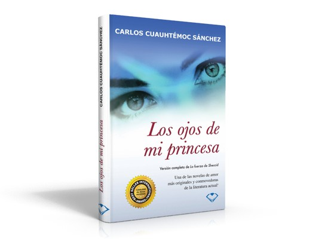

One of my favorites hobbies is draw most of the time; I am not the best drawing but I like to draw. This my favorite drawing.
My second hobbie is reading; I have been reading from I was five years old. The genre of books that I most like poems, and actually my favorite writer is a Spanish woman called Elvira Sastre.
The first book that I red was, Los Ojos de mi Princesa by Carlos Cuauhtemoc Sanchez
